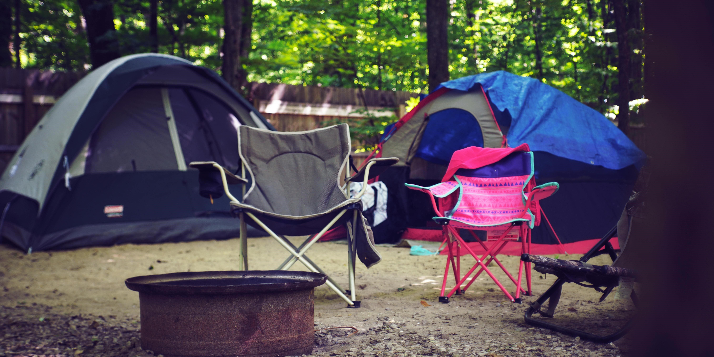
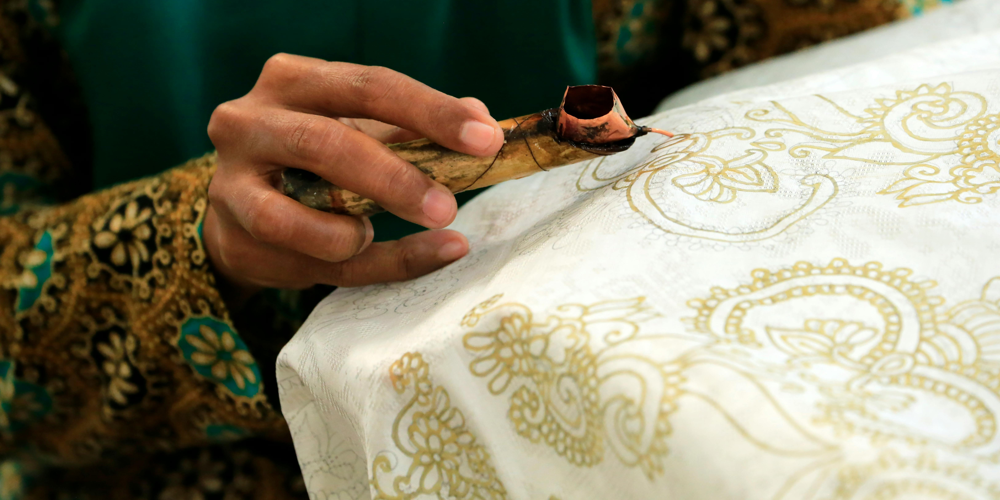
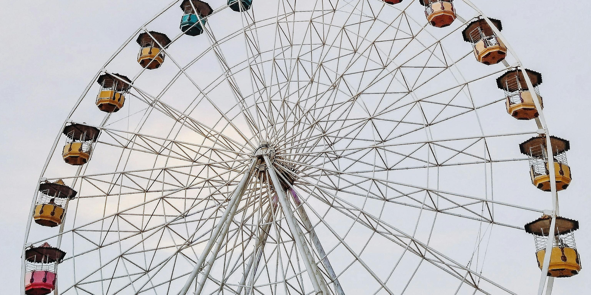

Bandung, camping
Menghabiskan waktu di tengah hutan bersama dengan orang yang berarti

Yogyakarta, Membuat batik
Belajar melestarikan budaya, membuat batik dengan tangan yang dipanu bersama para ahlinya

Jakarta, Wahana seru
Nikmati masa mudamu, bersama teman keluarga bermain wahana seru dan menantang
Raja Ampat, Telusuri lautan
Telusuri keindahan laut yang luas di indonesia, kunjungi rumah ikan dan pelasari ekosistem lautan.

Bali, Pertunjukan kecak
Nimati pertunjukan kecak tarian khas Bali yang merupakan perpaduan antara drama dan tari